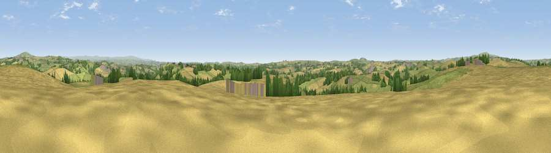

Viewpoint near Pillaton
#13859 in England · top 23% of its area beats it · near PillatonWhere it is
The exact computed spot (SX 34875 62475). Click the marker for map links.
The view, rendered

A 360° render of this exact spot computed from the terrain model, tree cover and land cover — summer colours, afternoon light, calibrated against photographs of famous viewpoints. Real trees, hedges and buildings will differ in detail.
The panorama
Grey silhouette: terrain skyline in each direction (720 bearings, Earth curvature and refraction included). Dashed green: skyline with trees (+15 m) and buildings (+8 m) as obstacles. Blue strip: how far the ground is visible on each bearing.
Where the view opens
Wedge length = distance to the farthest visible ground on that bearing (vegetation-aware). Rings at 10, 25 and 50 km.
What fills the view
48% cropland · 41% grassland · 9% woodland · 1% built-up
Angular shares of the visible panorama (visual magnitude), not map area. Landscape diversity 0.44 (0–1 Shannon).
Key numbers
More beautiful places nearby
The staircase of upgrades: each row has a higher view potential than everything closer. Driving times are estimates from straight-line distance, calibrated against real road routing — check an actual route before setting out.
| Place | Direction | Drive | Score |
|---|---|---|---|
| Viewpoint near Landrake | ESE · 2 km | ~6 min | 59.2 |
| Trewoodgate Hill | NW · 3 km | ~7 min | 61.3 |
| Kernock Hill | NE · 3 km | ~7 min | 68.6 |
| Viewpoint near Landrake | SE · 5 km | ~10 min | 69.4 |
| Viewpoint near Morval | SW · 7 km | ~15 min | 75.0 |
| Viewpoint near Crafthole | S · 8 km | ~16 min | 81.0 |
| Viewpoint near Downderry | S · 9 km | ~17 min | 83.5 |
| Viewpoint near Polperro | SW · 20 km | ~33 min | 83.7 |
50.43884, -4.32670 · source: screening · position refined by local search. Computed location — check access rights before visiting.